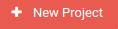
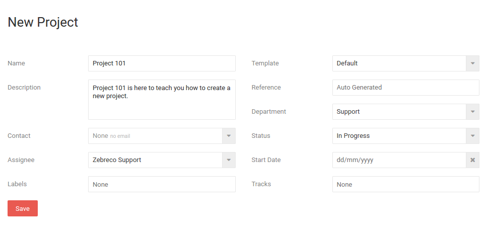
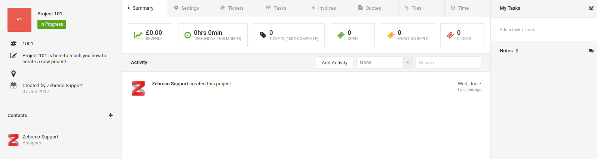
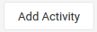
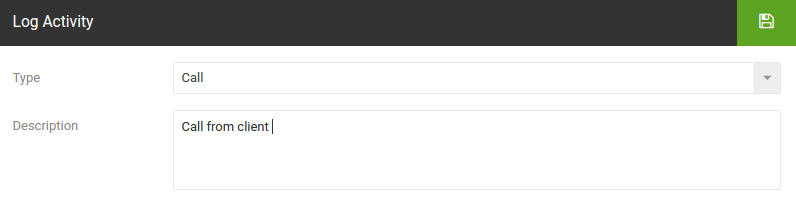
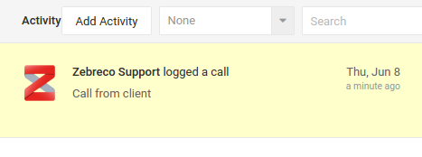
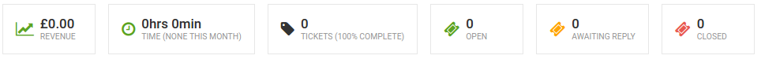

Projects¶
Projects are a collection of tickets, tasks, etc all relating to one project. By organising all tickets and any documents related into one project it makes things a whole lot easier when you are dealing with multiple projects.
Creating a New Project¶
To create a new project navigate to the project view page and click on 'New Project'.

This will take you to the project creation screen where you can enter all the required details.

- Name - The project name.
- Description - A short description of the project.
- Contact - The main contact relating to the project.
- Assignee - The user who is assigned to this project.
- Labels - Here you can apply any number of customised labels.
- Template - If you have project templates setup you can apply them here.
- Reference - Here you can specify the project reference. By default this will increment from the previous.
- Department - Assign the project to a specific department.
- Status - Can be set to Complete, In-Progress or on Hold (as well as custom statuses). Set to 'In-Progress' by default.
- Start Date - You can give the project a start date.
- Tracks - This is where you can apply a task track to the project.
When you have setup the project to your liking, click Save.
Project Overview¶
To view the project first go to Projects, then click on your chosen project. This will take you to the project overview.

The default tab is 'Summary' where you can see a number of statistics for the project. The main content shows any activity with time stamps which can be viewed with a number of filters.
Logging Activity¶
From the summary page you can add activity in the form of notes, calls and emails. To log activity simply click on Add Activity.

This brings up a popup where you can select an activity type and any description required.

When you are done click the save icon. The activity will show on the log below.

Project Status Bar¶
Also on the project summary screen is the status bar. This holds lots of useful statistics regarding the selected project.

- Revenue - Revenue generated by this project.
- Time - Time spent on this project (sum of tickets).
- Tickets - Amount of tickets related to this project and the percentage of overall completion.
- Open - Number of open tickets related to this project.
- Awaiting Reply - Number of tickets awaiting reply related to this project.
- Closed - Number of tickets related to this project which have been closed.
Note: clicking on these statuses will take you to the corresponding tab in the project.
Project Settings¶
For information on project setting Go Here
Back to Top
Back to Documentation Menu